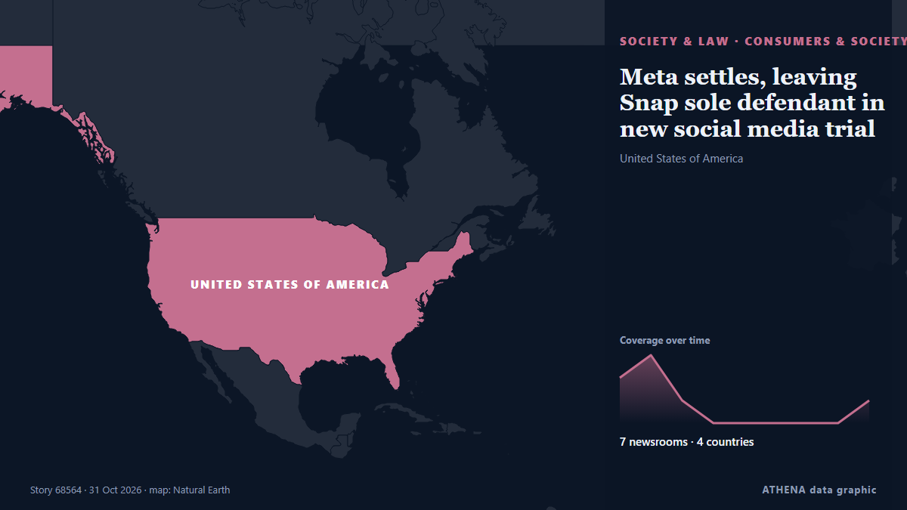

Καταναλωτές & κοινωνία
| 18 Οκτ | 0 |
|---|---|
| 19 Οκτ | 0 |
| 20 Οκτ | 0 |
| 21 Οκτ | 0 |
| 22 Οκτ | 0 |
| 23 Οκτ | 1 |
| 24 Οκτ | 2 |
| 25 Οκτ | 2 |
| 26 Οκτ | 3 |
| 27 Οκτ | 4 |
| 28 Οκτ | 2 |
| 29 Οκτ | 4 |
| 30 Οκτ | 6 |
| 31 Οκτ | 0 |
Οι τίτλοι των ειδήσεων παρουσιάζονται στα αγγλικά, όπως δημοσιεύτηκαν.

Meta settles, leaving Snap sole defendant in new social media trial
The terms of the agreement are confidential, but sources said Meta decided to settle for business reasons. από The Straits Times
Voter voices: Which issues matter most to Americans?
As part of our Voter Voices series, the BBC asked Americans across the country what issue will influence how they vote. από BBC News
Andy Burnham and John Healey 'plan for PIP households from 2029'
The Chancellor issued an update on welfare spending plans. από Birmingham Mail
Safaricom Refunds M-Pesa Customers
Safaricom's M-Pesa terms archive idle accounts after 90 days and send money unclaimed for two years to a state agency, which has a 1 November deadline. από The Rio Times
EU Hits Pause On Country-Level Social Media Bans For Children
The EU rejected Austria’s proposed ban on social media for children under 14 after reviewing whether it complied with bloc rules. από Free Malaysia Today
Man jailed for assaulting influencer admits threats to kill woman he contacted on Instagram
An 89-year-old woman who was killed in her council house was contacted by the local authority in the months before her death over the illegal occupancy of the property by the man accused of her… από RTÉ News
Japan’s Beleaguered Shoppers Are a Worry for Convenience Stores and the Economy
The increasing thriftiness of Japanese consumers is likely to cause wider economic issues. από The Business Times
7 out of 10 sunscreens fail SPF label claims in New Zealand test
The long-awaited details of proposed reforms to the sunscreen industry have been released by the medicines regulator. από ABC News Australia
KITA seeks to expand Korean consumer goods presence in Middle East, North Africa
The Korea International Trade Association wrapped up a four-day trade mission to the United Arab Emirates and Morocco this week, aiming to help Korean consumer goods companies broaden their reach in… από Korea Herald
Global smartphone shipments fell 20% in 3Q26, the lowest third-quarter total since 2013 – Omdia
Samsung retained its position as the world's largest smartphone vendor, shipping 57.8 million units, down 5% YoY. #pressrelease. από Light Reading
Parents turn to costume swap to cut Halloween costs
One mother said Halloween outfits are "completely extortionate" as families pick up free alternatives. από BBC Business
Binman on the one ‘recycling bin mistake’ households make with everyday item
Households are being reminded never to put one item in their recycling bins. από Liverpool Echo
Man accused of recording intimate image without consent at Dublin Airport remanded in custody
None of 16 defendants who appeared during Saturday’s main daytime sitting at Dublin District Court legally represented due to dispute. από The Irish Times
Meta, Snap head back to Los Angeles court for social media addiction trial
{beacon} Technology Technology The Big Story Meta, Snap head back to LA court in social media addiction trial Social media giants Meta and Snap, the company behind Snapchat, are heading back to court… από The Hill
Oxford Street bans traffic
London is pedestrianizing its version of Fifth Avenue. από NPR World
FTC and 20 states sue Dollar General, accusing bargain chain of overcharging customers
Suit that cites 2025 Guardian investigation alleges ‘pattern of inaccurate pricing’ that ‘affects millions of purchases’ The Federal Trade Commission and 20 states have sued Dollar General, the… από The Guardian
Closing ceremony of 7th World Forum on Intercultural Dialogue held in Baku
The 7th World Forum on Intercultural Dialogue will be held in Baku on October 27–29 under the motto "Dialogue for a Shared Future: Building Bridges in a Fractured World." από AzerNews
Samsung tablet to rival iPad slashed to £3 a month in Sky sale
The ridiculously low price works out at 10p a day for the easy to use tablet that shoppers are 'thrilled' with. από Bristol Post
France may block social media platforms calling for riots
The EU must urgently investigate the role of social media during protests in member states including France, European lawmakers demanded Friday, adding that Brussels should be prepared to block… από The Local Spain